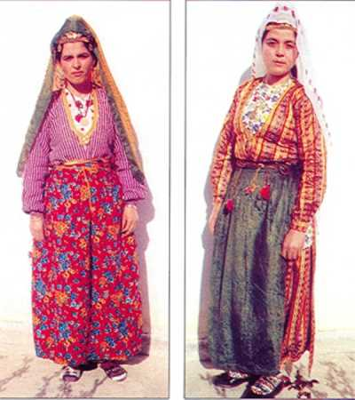
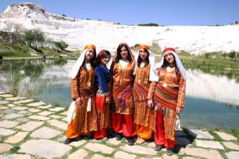
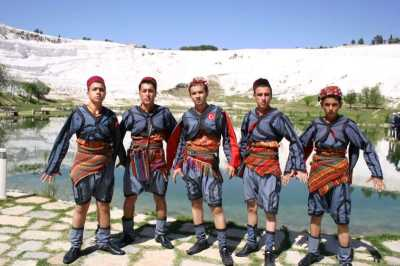
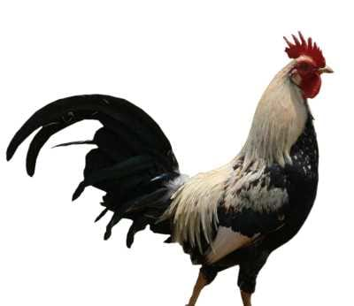
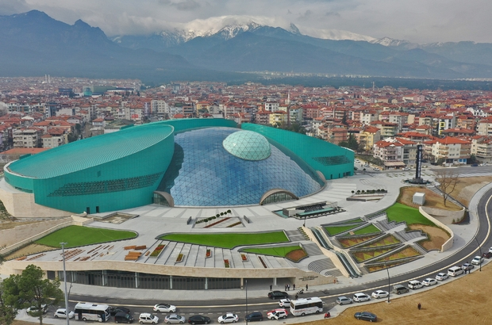
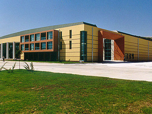
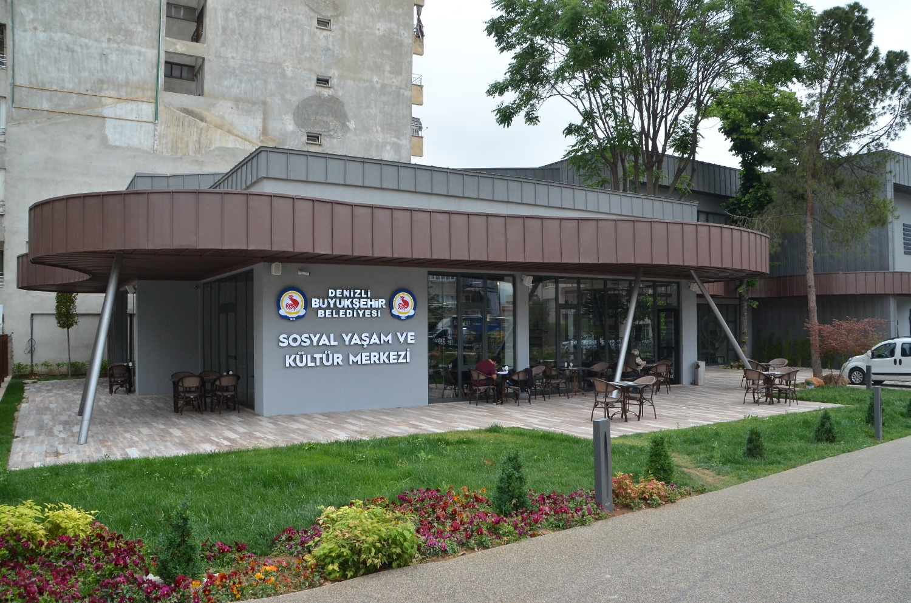
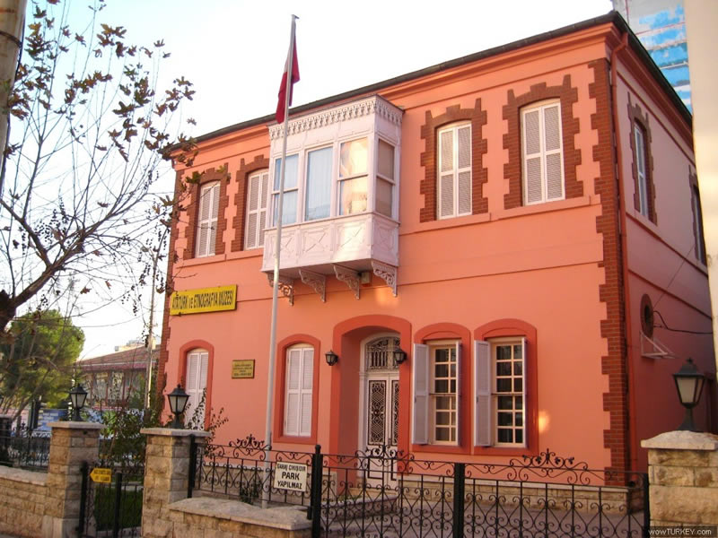
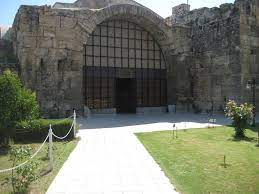
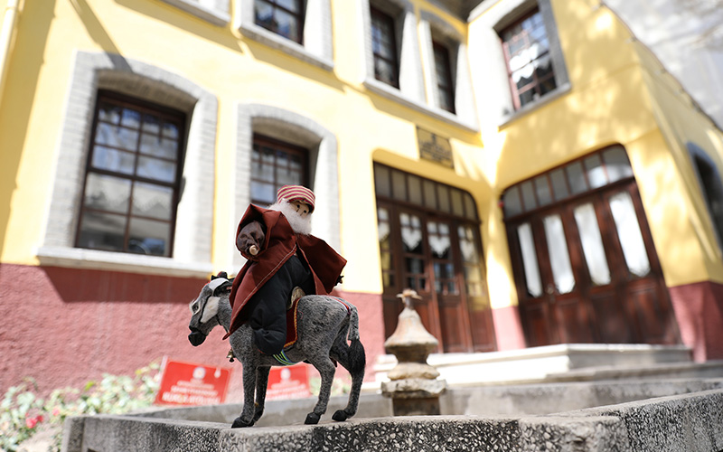

Culture and Art
Culture
Clothing:
There are differences in clothing in various regions of Denizli. Some features seen in women's clothing: There is not much difference between today's women's clothing of Acıpayam, Tavas and Çameli regions. Women generally wear wide-legs, golf-type, elasticated shalwar. Top garments are “Fistan”, some of which are pieced, and some of them are monolithic, reaching up to the knees. A fez with yellow sequins on the front is usually worn on the head. A veil is tied over the fez. Clothes are made of colorful fabrics. Head covers are also white or colored crepes.
In the south, the Buldan region consists of "Fistan" in women's clothing that extends up to the heels. In addition, a cover called “Peştamal” is wrapped around the waist. Especially the loincloths worn are made of cotton, striped and colorful. The ones used in wedding associations are made of silk, colored and plain patterned. Again, in the same local villages, women also wear shalwar, which is made of various fabrics in layers and extends up to the heel. It is used as a colored or plain top on loincloths and pistachios. These tops are called “Buldan tops”. Although the clothes of Çal, Çivril region fit the Tavas region, there are some differences. In the villages, they usually wear a festoon called three skirts made of colored fabrics, a shalwar and a fez decorated with sequins.
Folklore:
In Denizli Folk Music and traditional dances, traces of the music and dances of the neighboring provinces can be seen. On the one hand, it was influenced by the zeybek weather of Aydın and Muğla for centuries, and on the other hand, it was influenced by the lively, dynamic dance and music of the Teke region.
- FOLK MUSIC:
- Kerem variations, odd ones, marble melodies form the unique musical structure of Denizli region. The rhythmic feature of the region is that it is nine times. It is common to play the saz in the baglama in Denizli region. The baglama family (divan, baglama, tambur, cura) is a very popular instrument in the region. There are zucchini violines of various sizes from string sedges. Wind instruments such as zurna, sipsi, tongued whistles and dumb pipes made of bone are common in the region. Bell, basin, spoon, tambourine, drum are percussion instruments of Denizli region.
- TRADITIONAL FOLK DANCES:
- Zeybek dances and types are common in Denizli. Zeybek is a rich folklore source in the region with a wide variety of musical instruments. The games are played outdoors with drum-zurna, drum-clarinet, indoors with saz and darbuka.
- MEN'S DANCES:
- Dances performed by men are called "Efe Dance". These dances are of the zeybek type. Tavas Zeybeği, Çal Feraisi, Acıpayam Zeybeği, Harmandalı, Çivril Zeybeği, Kerimoğlu Zeybeği can be counted among these.
- WOMEN'S DANCES:
- These are called "Girl Dance". Some; Linen Shirt, Plain Game, Cameli. Girls' dances are usually performed indoors with the accompaniment of spree, tambourine, darbuka (dumbelek) and basin.  
The "Denizli Rooster", which is the symbol of Denizli, is a local breed that has made a name for itself in the farthest regions of our city with its harmonious long and beautiful crows in terms of color and body structure. Denizli Rooster's eyes should be black and permanent. Legs are dark gray or purple, crest is ax-comb-shaped, auricle is red or with white spots on red, general color, black-dirty-white jointly mixed. Sometimes brown colors are found on the wing feathers. In red roosters, black and red are mixed together. The crowing length of Denizli Roosters in the first year is 20-25 seconds. is happening.
Etkinlikler
Cultural and artistic activities in Denizli are generally organized by Denizli State Theatres, Pamukkale University, Denizli Metropolitan Municipality, Merkezefendi Municipality, Pamukkale Municipality and other institutions. In addition, private organization companies organize various events. Denizli State Theater performs its plays two or three days a week. Other events (concerts, talks, etc.) are frequently organized at various venues and times. There are many convention and cultural centers, theaters and movie theaters in the city.
Congress and Cultural Centers:|  |  |  |
Museums:
|  |  |  |
Festivals: